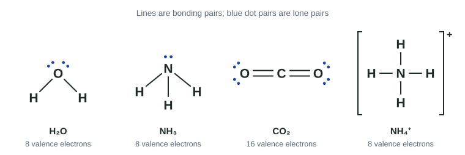

So far a bond has been an idea: shared electrons between nuclei. A Lewis diagram turns it into a picture you can count. It shows every valence electron in a molecule or ion, which pairs are shared and which are not. The next two topics build on it: 2.6 chooses between possible diagrams, and 2.7 turns a diagram into a three-dimensional shape.
What a Lewis diagram shows
A Lewis diagram (also called a Lewis structure) shows only valence electrons:
- A bonding pair, two electrons shared between two atoms, is drawn as a line. A double bond is two lines, a triple bond three.
- A lone pair, two valence electrons on one atom that are not shared, is drawn as a pair of dots.
- The central atom is the atom bonded to the others; the outer atoms surround it.

The octet rule
In most stable molecules made of period 2 atoms, each atom ends up with eight electrons around it, counting its lone pairs and both electrons of every bond it is part of. That is the octet rule. It works because eight valence electrons is the noble gas configuration (s² p⁶): the s and p subshells of the valence shell are full. Hydrogen is the exception in the other direction: its first shell holds only two electrons, so H has one bond and no lone pairs.
The octet rule is a pattern, not a law. The atoms are not trying to reach eight; diagrams that give second-period atoms eight electrons simply describe the arrangements with the lowest energy.
Drawing a Lewis diagram, step by step
- Count the valence electrons. Add the group's valence electrons for every atom (group 1: 1, group 2: 2, groups 13-18: 3-8). For an anion add one electron per negative charge; for a cation subtract one per positive charge.
- Draw the skeleton. Put the central atom in the middle (usually the atom that appears once, often the least electronegative; never H, and rarely F) and connect each outer atom to it with a single bond.
- Complete the outer atoms. Give each outer atom lone pairs until it has an octet (H needs none).
- Place leftovers. Put any remaining electrons on the central atom as lone pairs.
- Fix the central atom. If it has fewer than eight, move a lone pair from an outer atom into a double bond (or two into a triple bond), until it has eight.
- Check. Count the electrons in the drawing; the total must equal step 1. Put an ion in square brackets with its charge.
Worked example. Draw the Lewis diagram of formaldehyde, H₂CO.
1. Count: 2 H × 1 + C 4 + O 6 = 12 electrons.
2. Skeleton: C in the middle, bonded to H, H and O. Three bonds use 6; 6 remain.
3. Outer atoms: O gets three lone pairs (6). 0 remain.
4. Leftovers: none for C.
5. C has only 6 electrons (three bonds). Move one lone pair of O into a C=O double bond. Now C has 8, O has 8 (two lone pairs plus the double bond), each H has 2.
6. Check: 2 + 2 + 4 + 4 = 12. Correct.
Worked example. Draw the Lewis diagram of the amide ion, NH₂⁻.
1. Count: 2 × 1 + 5 + 1 (for the 1− charge) = 8 electrons.
2. Skeleton: N central, two N–H bonds, using 4. 4 remain.
3-4. H atoms are complete; the last 4 electrons go on N as two lone pairs.
5. N has 4 + 4 = 8. Done. Write it in brackets with a − outside.
Polyatomic ions
A polyatomic ion is a group of atoms joined by covalent bonds that carries an overall charge, such as NH₄⁺, OH⁻, NO₃⁻ and SO₄²⁻. Its Lewis diagram is drawn exactly like a molecule's, with the charge included in the electron count and the whole diagram in brackets. A common slip is adding an electron for a positive charge; a cation has lost electrons.
Compounds can contain both kinds of bonding. In sodium nitrate, NaNO₃, the N–O bonds inside the nitrate ion are covalent, while Na⁺ and NO₃⁻ are held together by ionic bonding.
Exceptions to the octet rule
- Incomplete octet. Boron (and beryllium) can end with fewer than eight. BF₃ has 24 electrons: three B–F bonds and three lone pairs on each F leaves B with six.
- Odd-electron species. If the total is odd, one electron must be unpaired, so some atom has fewer than eight. NO (11 electrons) and NO₂ (17) are examples; such species are called free radicals.
- Expanded octet. Atoms in period 3 and below (P, S, Cl, Xe and others) can hold more than eight electrons. PCl₅ puts 10 around P, SF₆ puts 12 around S. Period 2 atoms (C, N, O, F) never exceed eight. In an expanded-octet molecule, extra electrons left after the outer atoms are complete go on the central atom.
Worked example. Draw the Lewis diagram of xenon difluoride, XeF₂.
1. Count: Xe 8 + 2 × 7 = 22 electrons.
2. Skeleton F–Xe–F uses 4; 18 remain. 3. Each F gets three lone pairs (12); 6 remain.
4. The last 6 electrons go on Xe as three lone pairs. Xe has 4 + 6 = 10 electrons: an expanded octet, allowed because Xe is in period 5.
Common mistakes
- Charge in the wrong direction. Anions add electrons; cations subtract them.
- Forgetting lone pairs on the central atom (a frequent loss of points). If electrons are left after the outer atoms are complete, they go on the center.
- Counting a bond as one electron. A bond is two electrons, and both count toward each atom it joins.
- Expanding a period 2 atom. C, N, O and F have at most eight.